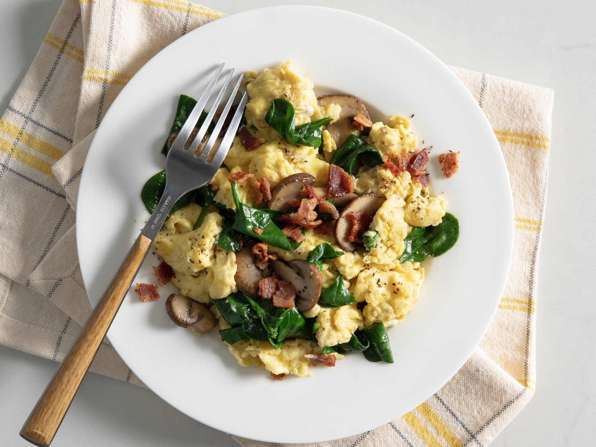

Scrambled Eggs

Description
Some simple yet delicious scrambled eggs. To feed.
Ingredients
- 4 Eggs
- 1/2 White onion
- 6 Mushrooms
- 3 Rashers of bacon
- 100ml Milk
- A handful of spinach
- A pinch of salt, pepper and garlic
- Some butter
How to make
- Crack the eggs into a bowl and mix with the milk.
- Caramelise the onions in a medium sized pan with some butter.
- When the onions are almost done, add the bacon and mushrooms to the pan until cooked.
- Once thats finished, add the spinach and eggs to the pan on medium heat.
- Stir the pan while cooking until the eggs are no longer liquid.
- Add the garlic,pepper and salt.
- Take off heat and wait for the eggs to bring forth life using the nutrients within the other ingredients.
- Behold! The miracle of Life!
Back to Homepage